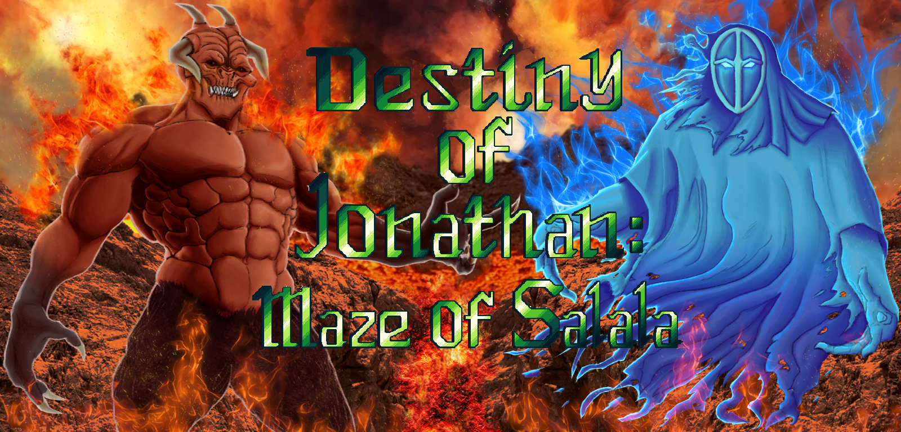
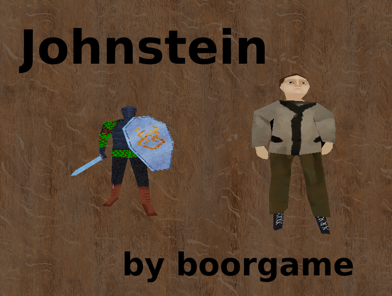

Projektit
x86 disassembler
Destiny of Jonathan: Maze of Salala (One game companyn peli)

Johnstein (3d roolipeli hieman yksinkertaisempi ja pienempi kuin Destiny of Jonathan)

x86 disassembler
Destiny of Jonathan: Maze of Salala (One game companyn peli)

Johnstein (3d roolipeli hieman yksinkertaisempi ja pienempi kuin Destiny of Jonathan)
